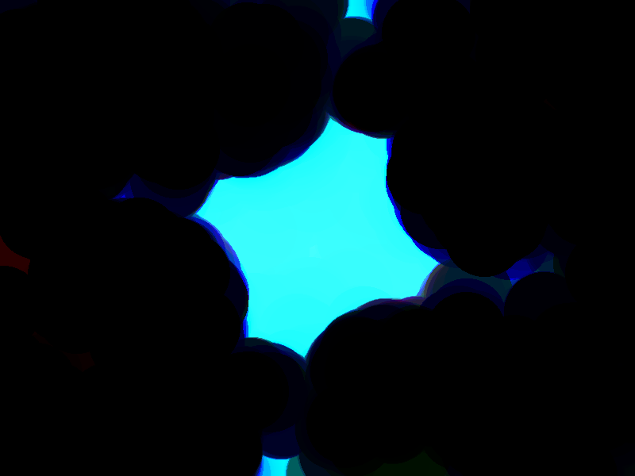

⚠️New added things⚠️"
last update | 02/09/2026/18:11 ⌚ |



⚠️ Copyright Disclaimer ⚠️: All original content posted here and on my other pages is copyrighted by me. Third-party software and materials remain the property of their respective authors
___________________________________________________________________________________________________________________________________________________
⚠️If you want, you can contact me in my Email and i will reply to all of you'r question here below, feel free to write me an Email. You can find my Email in the left corner of the site. Have a nice day :)⚠️